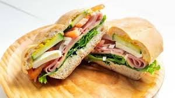

Chilaquiles

Lista de Ingredientes
- un troco de baguette
- ½ taza de frijoes refritos
- 4 rebanadas de queso
- 4 rebanadas de jamon
- 3 rodajas de tomate
Intrucciones:
- Parte el pan a la mitad, en una de las mitades agrega los frijoles y en la otra agrega el aguacate.
- EN una de los panes po las rebanadas de jamon y el tomate.
- En el otro pan agrega el queso y une las dos caras y aplasta los panes y corta para luego emplatar.
Informacion nutricional
- 197 g contienen 283 calorias
- 12.2g de grasas
- 33.6g de carbohidratos
- 11.5g de proteina
Video tutorial